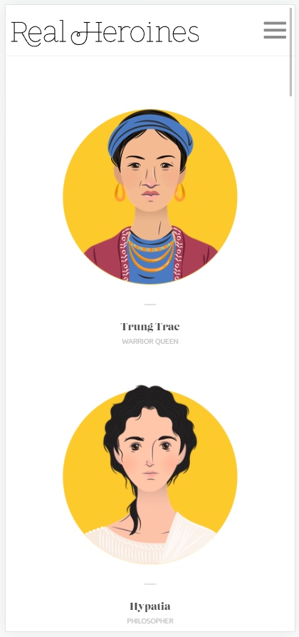
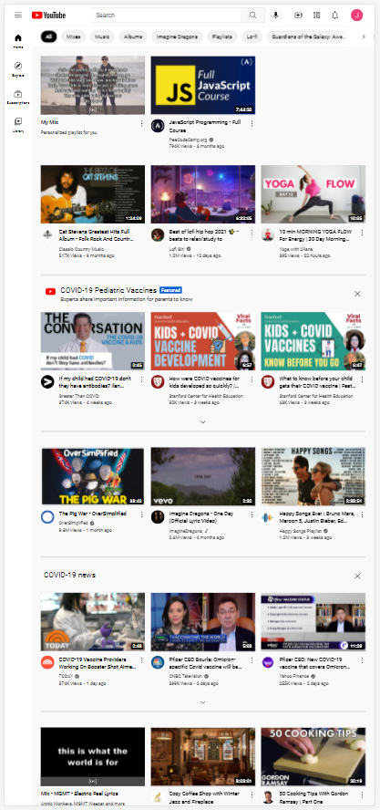

The Real Heroines websites uses white space by having each person a portrait with a name and title, with plenty of space around each one.

YouTube is a master of alignment! The site uses many rows and columns, adjusted to your viewport, to show numerous collections of personalized content.
PluralSight uses a strong example of contrast on their site. With a black background, white text and minimal highlights of strong color, options are highlightes.